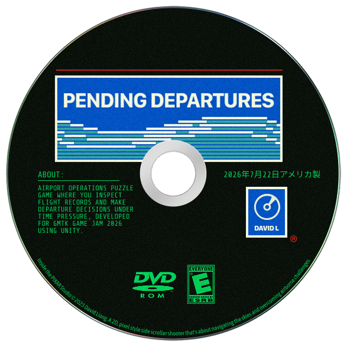

DAVID OS 95 / ART DESKART DESKQUICK SKETCHES / PIXEL ART / PAINT
Minimize to taskbar
The art window shrinks into its taskbar slot, then the teal desktop clears.
Teal wallpaper, silver windows, and navy title bars. Preview a direction before choosing.
Each preview changes the page background. The game cards keep the same cream surface, borders, and typography.

Pending Departures The Perfect LOOP
The Perfect LOOPBold rust, orange, and mustard rails frame the page, keeping the center calm and readable.
Preview on GamesThe Perfect LOOPOversized sage and ochre record circles sit in the outer margins, adding color and a nod to the CDs.
Preview on GamesThe Perfect LOOPA broad sage background behind the title opens the page with color, then gives way to cream around the collection.
Preview on Games